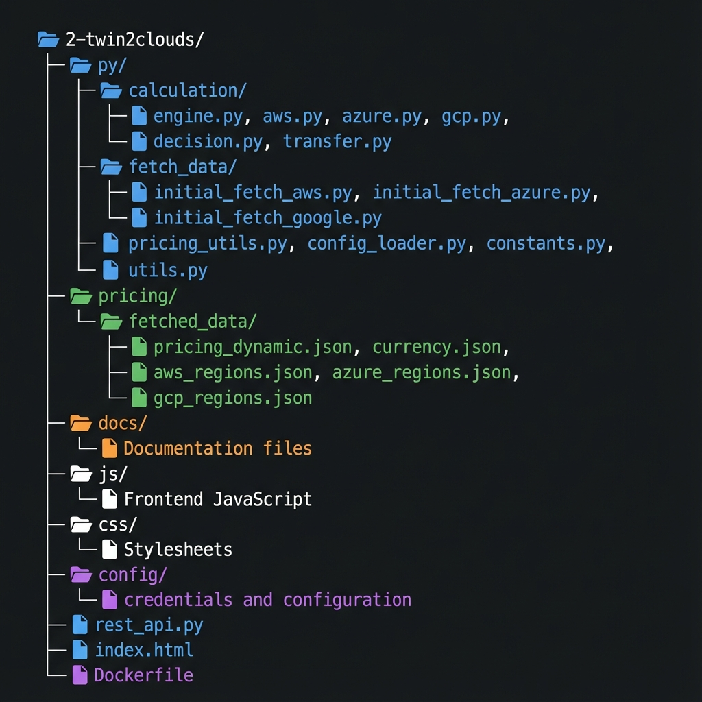

Project Structure
Overview of the Twin2Clouds codebase organization and key components.
Directory Structure
Core Directories
backend/ - Python Backend
Contains all Python modules for cost calculation, pricing fetching, and utilities.
backend/calculation/ - Cost Calculation Engine
engine.py- Main calculation orchestrator, determines optimal cloud provider per layerdecision.py- Graph-based path-finding algorithm for storage tier optimizationaws.py- AWS-specific cost formulas (IoT Core, DynamoDB, Lambda, S3, TwinMaker, Grafana)azure.py- Azure-specific cost formulas (IoT Hub, CosmosDB, Functions, Blob Storage, Digital Twins, Grafana)gcp.py- GCP-specific cost formulas (IoT Core, Firestore, Cloud Functions, Cloud Storage)transfer.py- Data transfer and egress cost calculations between providers and tiers
backend/fetch_data/ - Dynamic Data Fetching
initial_fetch_aws.py- Fetches AWS region lists with 7-day cachinginitial_fetch_azure.py- Fetches Azure region lists with 7-day cachinginitial_fetch_google.py- Fetches GCP region lists with 7-day cachingcloud_price_fetcher_aws.py- AWS Pricing API integration using boto3cloud_price_fetcher_azure.py- Azure Retail Prices API integrationcloud_price_fetcher_google.py- GCP Cloud Billing Catalog API integrationcalculate_up_to_date_pricing.py- Orchestrates pricing fetches from all providers
Core Utilities
pricing_utils.py- Currency conversion (USD/EUR) and schema validationconfig_loader.py- Loads configuration and credential filesconstants.py- File paths and system constantsutils.py- File freshness checking, caching utilitieslogger.py- Logging configuration
json/ - Pricing Data
json/fetched_data/
pricing_aws.json- Cached AWS pricing data (7-day TTL)pricing_azure.json- Cached Azure pricing data (7-day TTL)pricing_gcp.json- Cached GCP pricing data (7-day TTL)currency.json- Cached USD/EUR exchange rates (1-day TTL)aws_regions.json- AWS region mapping (7-day TTL)azure_regions.json- Azure region mapping (7-day TTL)gcp_regions.json- GCP region mapping (7-day TTL)
config/ - Configuration
config_credentials.json- Cloud provider credentials (AWS, Azure, GCP)service_calc_params.json- Service configuration parametersservice_mapping.json- Maps neutral service names to provider-specific names
docs/ - Documentation
docs-overview.html- Documentation landing pagedocs-setup-usage.html- Setup and usage guidedocs-architecture.html- Architecture overviewdocs-project-structure.html- This documentdocs-aws-pricing.html- AWS pricing schema detailsdocs-formulas.html- Cost formula documentation
js/ - Frontend JavaScript
api-client.js- REST API client, form handling, result displaycalculation/ui.js- UI interaction handlersdocs-nav.js- Navigation for documentation pages
css/ - Stylesheets
styles.css- Main application stylesdocs_styles.css- Documentation page styles
Key Files
rest_api.py - FastAPI Backend
Main application entry point. Defines the REST API endpoints:
PUT /calculate- Calculate optimal cloud configurationPOST /pricing/fetch/{provider}- Fetch provider pricingGET /file-status/pricing/{provider}- Check pricing file statusGET /file-status/currency- Check currency file statusGET /ui- Serve web interfaceGET /docs- Swagger API documentation
index.html - Web UI
Single-page web interface for configuring scenarios and viewing results. Features:
- Currency selector (USD/EUR)
- Scenario presets (Smart Home, Industrial Facility, Large Building)
- Interactive input forms for all layers
- Visual cost comparison cards with provider breakdown
Dockerfile
Container definition for deploying the application. Uses Python 3.9 slim image, installs dependencies, and exposes port 5003.
Code Flow
Calculation Request Flow
- User submits parameters via web UI or API →
index.html/api-client.js - Request received by FastAPI →
rest_api.pycalc()endpoint - Parameters passed to calculation engine →
backend/calculation/engine.pycalculate_cheapest_costs() - Pricing data loaded →
json/fetched_data/pricing_*.json - Cost calculated for each provider:
calculate_aws_costs()→ callsbackend/calculation/aws.pyformulascalculate_azure_costs()→ callsbackend/calculation/azure.pyformulascalculate_gcp_costs()→ callsbackend/calculation/gcp.pyformulas
- Transfer costs calculated →
backend/calculation/transfer.py - Optimal path determined →
backend/calculation/decision.pygraph algorithm - Currency conversion applied (if EUR) →
backend/pricing_utils.py - Results returned to user → JSON response displayed in UI
Pricing Fetch Flow
- User or system triggers pricing fetch →
POST /pricing/fetch/{provider} - Check cache freshness →
backend/utils.pyis_file_fresh() - If stale, fetch new pricing →
backend/fetch_data/calculate_up_to_date_pricing.py - Fetch from specific provider:
- AWS →
cloud_price_fetcher_aws.py(boto3 Pricing API) - Azure →
cloud_price_fetcher_azure.py(Retail Prices API) - GCP →
cloud_price_fetcher_google.py(Cloud Billing Catalog API)
- AWS →
- Validate schema →
backend/pricing_utils.pyvalidate_pricing_schema() - Save to cache →
json/fetched_data/pricing_{provider}.json
Development Notes
Adding a New Cloud Provider
- Create
backend/calculation/[provider].pywith cost formulas - Create
backend/fetch_data/cloud_price_fetcher_[provider].pyfor pricing API integration - Add provider to
backend/fetch_data/calculate_up_to_date_pricing.py - Update
backend/calculation/engine.pyto include provider in optimization - Add provider credentials to
config/config_credentials.json
Adding a New Service/Layer
- Define cost formula in appropriate
backend/calculation/[provider].pyfiles - Add service to
config/service_mapping.json - Add pricing fetcher logic to
cloud_price_fetcher_[provider].py - Update
calculate_up_to_date_pricing.pyschema builder - Modify
engine.pyto include in optimization logic - Add UI inputs to
index.htmlandapi-client.js
Caching Strategy
The application uses file-based caching with TTL (Time To Live):
- 7-day cache: Pricing data, region lists (stable data)
- 1-day cache: Currency exchange rates (more volatile)
- Cache validation uses file modification timestamps via
utils.is_file_fresh() - Cache files are stored in
json/fetched_data/